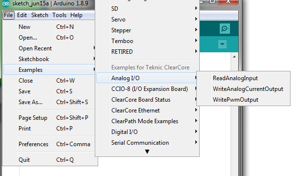

Overview
The ClearCore Arduino Wrapper Library, used in conjunction with the standard ClearCore Motion and I/O Library, allows for easy programming in the lightweight Arduino IDE. Using ClearCore with the Arduino IDE is suitable for all developers, from confident Arduino users to novice programmers or even experienced programmers who want to create a prototype as quickly as possible.
This section serves as a reference guide for the ClearCore Arduino wrapper functions that can be used to control your ClearCore. Because this is a software wrapper, each of the functions within it interacts with the ClearCore Motion and I/O Library. As such, some of the functions you see here were modified from the original Arduino counterparts. Any differences from the standard Arduino functions are documented below as well.
ClearCore motor input aliases
| Name | Arduino Alias |
| M-0 Input A | M0_INA |
| M-0 Input B | M0_INB |
| M-1 Input A | M1_INA |
| M-1 Input B | M1_INB |
| M-2 Input A | M2_INA |
| M-2 Input B | M2_INB |
| M-3 Input A | M3_INA |
| M-3 Input B | M3_INB |
SDK Examples
As part of the Arduino installation package a number of examples sketches are included. These sketches demonstrate how to utilize the various features of ClearCore using standard Arduino functions and classes. The examples may be found in the Arduino IDE under the Examples menu, as seen below:

Deviations from standard Arduino
- The pin mode INPUT_PULLUP has no functional difference from INPUT. The two may be used interchangeably.
- analogRead() has an extra optional parameter to specify the desired units of the analog reading returned:
- 'units' may be set to ADC_RAW (default) or MILLVOLTS.
- analogWrite() has two extra optional parameters relating to the output:
- 'mode' may be set to either PWM (default) or CURRENT.
- 'units' may be set to either DAC_RAW (default) or MICROAMPS.
- analogReference() is not a supported function. The ClearCore analog input reference voltage is not user-modifiable.
- The default analog read resolution is 12 bits, rather than 10 bits.
- analogWriteResolution() is not a supported function. The analog write resolution of the ClearCore is 12 bits and is not user-modifiable.
- Tones are sine waves rather than half-duty square waves like most Arduinos.
- Arduino-style periodic interrupts using Timer0 and Timer1 are not supported. The AVR registers used to configure these Timers do not exist in the ClearCore hardware. Refer to the PeriodicInterrupt example in the Microchip_Examples directory for an alternative way to achieve the same functionality as Timer0 and Timer1.
- The Serial keyword represents the USB serial port. Serial0 and Serial1 represent the COM-0 and COM-1 serial ports respectively.
- The Servo and Stepper Arduino libraries are not supported by ClearCore. For motor control, defer to the underlying ClearCore I/O and Motion Control library. (See the Motor Control System documentation for more information.)
- The pulseIn() and pulseInLong() functions do not require interrupts to be enabled.
- There is no functional difference between pulseIn() and pulseInLong().
Global Types, Enumerators, and Objects
Pin Mode
- Digital pins can be used as INPUT, INPUT_PULLUP, or OUTPUT. Changing a pin with pinMode() changes the electrical behavior of the pin.
- More information can be found here.
Pin Status
- When reading or writing to a digital pin there are only two possible values a pin can take/be-set-to: HIGH and LOW.
- More information can be found here.
Serial
- Used for communication between the Arduino board and a computer or other devices. All Arduino boards have at least one serial port (also known as a UART or USART), and some have several.
- ClearCore may use either Serial, Serial0, or Serial1.
- More information can be found here.
Basic I/O
pinMode(pin, mode)
digitalRead(pin)
- Valid pins: All pins
- Reads the value from a specified digital pin, either HIGH or LOW.
- Arduino.cc Reference
digitalWrite(pin, value)
- Valid pins: IO0, IO1, IO2, IO3, IO4, IO5, M0_INA, M0_INB, M1_INA, M1_INB, M2_INA, M2_INB, M3_INA, M3_INB
- Write a HIGH or a LOW value to a digital pin.
- Arduino.cc Reference
analogRead(pin, units[optional])
- Valid pins: A9, A10, A11, A12
- Reads the value from the specified analog pin. The analog-to-digital converter on the ClearCore has a default resolution of 12 bits (not 10 bits like most Arduino boards).
The allowable range of analog input values is 0 to 10V. This function will map input voltages between 0 and 10V to integer values between 0 and 4095, unless the analog
read resolution is changed from its default value via a call to analogReadResolution().
- The units argument, if supplied, must be one of the following values:
- ADC_RAW - default, return the raw ADC value, with bit depth specified by analogReadResolution().
- MILLIVOLTS - the voltage level is returned, expressed in millivolts
- Arduino.cc Reference
analogWrite(pin, value, mode[optional], units[optional])
- Valid pins: IO0
- Writes an analog value (PWM wave) to a pin. Can be used to light a LED at varying brightnesses or drive a motor at various speeds. After a call to analogWrite(),
the pin will generate a steady rectangular wave of the specified duty cycle until the next call to analogWrite() (or a call to digitalRead() or digitalWrite()) on the same pin.
- The mode argument, if supplied, must be one of the following values:
- PWM - default, digital PWM output
- CURRENT - analog current output, exclusive to the ClearCore
- The units argument, if supplied, must be one of the following values:
- DAC_RAW - default, the raw 12-bit DAC reading is returned
- MICROAMPS - the voltage level is returned, expressed in microamps
- Arduino.cc Reference
analogReadResolution(bits)
- Sets the size (in bits) of the value returned by analogRead().
- The analog read resolution of the ClearCore defaults to 12 bits (returns values 0-4095), rather than the Arduino standard resolution of 10 bits.
- The allowable bit resolutions are: 8, 10, and 12.
- Arduino.cc Reference
analogWriteResolution(bits)
- Not supported. The analog write resolution of the ClearCore is 12 bits and is not user-modifiable.
analogReference(type)
- Not supported. The ClearCore analog input reference voltage is not user-modifiable.
Advanced I/O
tone(pin, frequency, duration[optional])
- Valid pins: IO4, IO5
- Generates an audible sine wave of the specified frequency on a pin. This is in contrast with standard Arduino boards that produce a square wave tone with 50% duty cycle.
A duration can be specified, in milliseconds, otherwise the tone continues to sound until a call to noTone().
- Arduino.cc Reference
noTone(pin)
- Stops the generation of an audible sine wave triggered by tone(). Has no effect if no tone is being generated on the specified pin.
- Arduino.cc Reference
pulseIn(pin, value, timeout[optional])
- Reads a pulse (HIGH or LOW) on a pin, starts timing, then waits for the pin to change state and stops timing. Returns the length of the pulse in microseconds,
or zero if no complete pulse was received within the timeout (specified in microseconds). If no timeout argument is supplied, the timeout will default to
1,000,000 microseconds (1 second).
- Arduino.cc Reference
pulseInLong(pin, value, timeout[optional])
- There is no functional difference between pulseIn() and pulseInLong() on the ClearCore board.
- See pulseIn().
Time
delay(ms)
- Pauses the program for the amount of time (in milliseconds) specified via parameter ms.
- Arduino.cc Reference
delayMicroseconds(us)
- Pauses the program for the amount of time (in microseconds) specified via parameter us.
- Arduino.cc Reference
millis()
- Returns the number of milliseconds elapsed since the board began running the current program. This number will overflow (return to zero), after approximately 50 days.
- Arduino.cc Reference
micros()
- Returns the number of microseconds elapsed since the board began running the current program. This number will overflow (return to zero), after approximately 70 minutes.
- Arduino.cc Reference
Interrupts
ClearCore pins DI6 through A12 can be set up as digital interrupts.
attachInterrupt(digitalPinToInterrupt(pin), ISR, mode)
- The first parameter to attachInterrupt() is an interrupt number. Use digitalPinToInterrupt(pin) to translate the actual digital pin to the specific interrupt number. For example,
if you connect to pin 3 (DI-6), use digitalPinToInterrupt(DI6) as the first parameter to attachInterrupt().
- The ISR must be a pointer to a function that takes no parameters and returns void. This is the function that will get called when the condition specified by mode is detected on the pin.
- The ClearCore supports interrupts on the following state conditions: LOW, CHANGE, RISING, FALLING, and HIGH (specified by mode).
- Arduino.cc Reference
detachInterrupt(pin)
interrupts()
noInterrupts()
- Disables interrupts on any pins that have had interrupts attached. For any pin that had an attached interrupt, if the condition specified by mode in the corresponding attachInterrupt()
call occurs while the interrupt is detached, it will still be detected and the ISR will fire upon re-enabling interrupts with interrupts(). To completely disable interrupt functionality on the pin,
use detachInterrupt() instead.
- Arduino.cc Reference
Serial
Arduino.cc Reference
begin(speed, config[optional])
- Sets the data rate in bits per second (baud) for serial data transmission. An optional second argument configures the data, parity, and stop bits. These default to 8 data bits, no parity, and one
stop bit.
- Arduino.cc Reference
write(val)
print(val, format[optional])
- Prints data to the serial port as human-readable ASCII text. An optional second parameter specifies the base (format) to use; permitted values are BIN (binary, or base 2), OCT (octal, or base 8),
DEC (decimal, or base 10), HEX (hexadecimal, or base 16). For floating point numbers, this second parameter specifies the number of decimal places to use.
- Arduino.cc Reference
println(val, format[optional])
- Prints data to the serial port as human-readable ASCII text followed by a carriage return character (ASCII 13, or '\r') and a newline character (ASCII 10, or '\n').
This command takes the same formats as Serial.print().
- Arduino.cc Reference
read()
ttl(bool isTtl)
- Sets whether the serial COM port is wired as TTL or not.
- This is a ClearCore-specific addition to the Arduino standard library.
SPI
Arduino.cc Reference
SPISettings(speedMaximum, dataOrder, dataMode)
- The SPISettings object is used to configure the SPI port for your SPI device. All 3 parameters are combined in a single SPISettings object, which is passed to SPI.beginTransaction().
- Arduino.cc Reference
begin()
- Initializes the SPI bus by setting SCK, MOSI, and SS to outputs, pulling SCK and MOSI low, and SS high.
- Arduino.cc Reference
beginTransaction(mySettings)
transfer(val)
- Performs the SPI transfer by sending the passed-in val and returning the received data.
- Arduino.cc Reference
endTransaction()
- Stop using the SPI bus. Normally this is called after de-asserting the chip select to allow other libraries to use the SPI bus.
- Arduino.cc Reference
Ethernet
Arduino.cc Reference
IPAddress()
- Defines an IP address. It can be used to declare both local and remote addresses.
- Arduino.cc Reference
begin(mac)
- Initializes the ethernet library and network settings. Any value supplied for the MAC address (mac) parameter will be ignored. The ClearCore's MAC address is stored in
non-volatile memory and should not be altered.
- Arduino.cc Reference
linkStatus()
- Tells you whether the link is active. LinkOFF could indicate the Ethernet cable is unplugged or defective.
- Arduino.cc Reference
External Reference
See official Arduino documentation at https://www.arduino.cc/reference/en.
 1.8.11
1.8.11